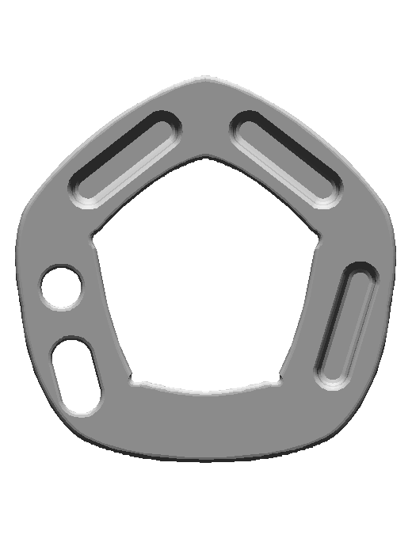
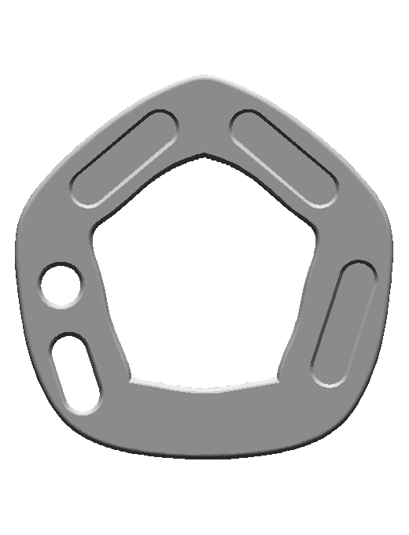
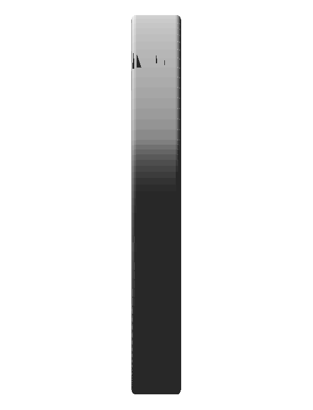
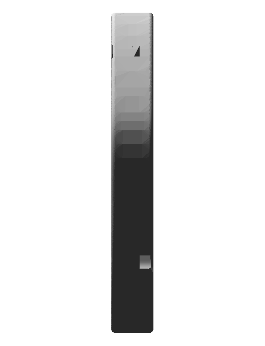
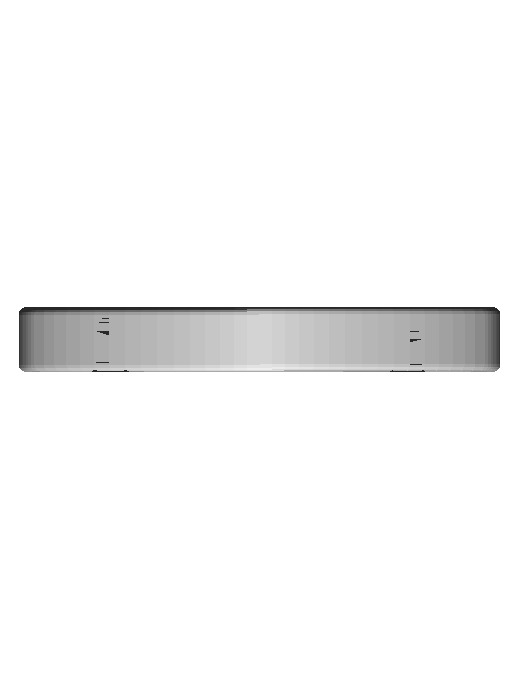
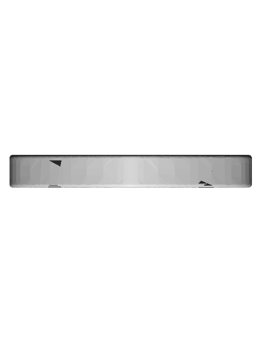

One reusable unit, seven contact slots and both cord-wrap attachment surfaces. Analytic Sketcher profiles were drawn from approved Git cross-section stations, with a native outer fillet, curved central tray and deliberately oriented asymmetric pocket inventory. Two physical equipment instances remain in metadata. No hidden cord channel was invented.
| Prior committed asset d0e4e951 | Native CAD |
|---|---|
front | front |
side | side |
top | top |
Compiler and native edit/recompute/restore passed. Exterior-wrap cord generation and individual app review remain pending.